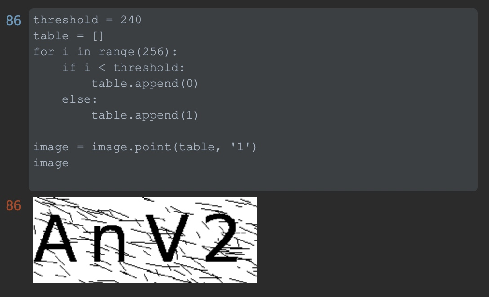
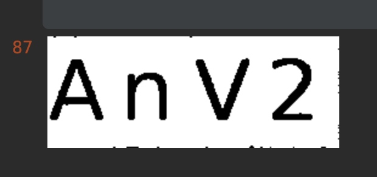
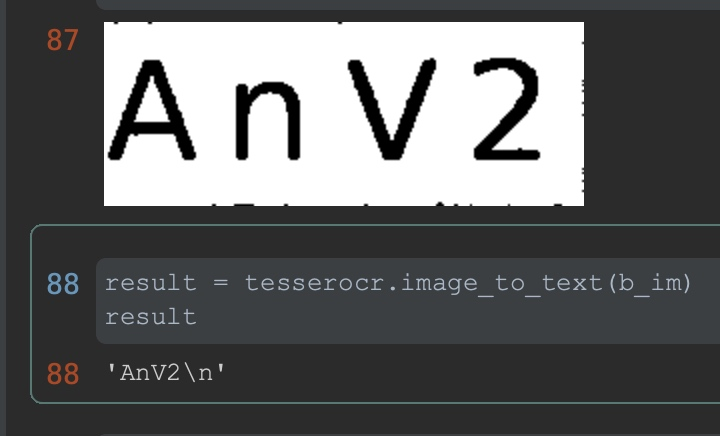

涉及工具技术
- Tampermonkey
- jQuery
- Tesseract-OCR
- Flask
- Pillow
前言
开发软件系统时必然会有用户登陆的模块。每次验证自己的功能时，总是绕不开输入账号密码，这已经是很麻烦的了，还得输入不好辨认的验证码。
为了简化登陆步骤，我通过使用图像识别 OCR 技术，和Web应用框架Flask搭建一个验证码自动识别的服务。并结合强大的浏览器插件Tampermonkey，编写一个简单的油猴脚本，在不入侵源系统的基础上，实现不输入验证码登陆。也为后期自动化测试奠定可操作的基础。
依赖安装
示例环境Centos8
sudo yum install epel-release
sudo yum install tesseract-devel leptonica-devel
yum install -y libjpeg-devel libpng-devel
yum install -y autoconf automake libtool
yum install -y git wget
yum install -y gcc gcc-c++
yum install -y tesseract tesseract-devel
yum install -y python36
创建python虚拟环境
python3.6 -m venv py36env
source py36env/bin/activate
python依赖安装
pip install flask
pip install flask_cors
pip install tesserocr
pip install pillow
pip install uwsgi
安装常见错误
找不到tesseract包
yum list tesseract
无数据
解决
yum -y install yum-utils
yum-config-manager --add-repo https://download.opensuse.org/repositories/home:/Alexander_Pozdnyakov/CentOS_8/
TESSDATA_PREFIX问题
[Sajor@10-7-151-243 AutoLogin]$ tesseract captcha_denoising.png result
Error opening data file /usr/share/tesseract/4/tessdata/eng.traineddata
Please make sure the TESSDATA_PREFIX environment variable is set to your "tessdata" directory.
Failed loading language 'eng'
Tesseract couldn't load any languages!
Could not initialize tesseract.
解决
搜索tessdata文件夹
find / -type d -iname "tessdata"
发现确实没有 eng.traineddata 文件，则下载一个。
wget https://github.com/tesseract-ocr/tessdata/raw/master/eng.traineddata
sudo mv -v eng.traineddata /usr/local/share/tessdata/
验证码识别
我们开发的系统登陆页面是这样的
其中验证码图片
先分析此验证码图片有以下特点
- 颜色多样
- 字母较大，干扰线细
- 线条笔直无扭曲
我们可以这样处理
颜色多样
针对颜色多样，我们可以先给图片做灰度处理再做二值化处理，这是识别前处理验证码的基操。
灰度图像: 每个像素用8个bit表示，0表示黑，255表示白，其他数字表示不同的灰度。
转换公式:L = R * 299/1000 + G * 587/1000+ B * 114/1000
from PIL import Image
image = Image.open(file).convert('L')

之后对灰度图片做二值化，使图片非黑即白，可以通过调整下图中threshold的值来过滤少部分颜色浅的干扰线，因为图片中字母部分也可能出现亮黄色的情况，为了防止误删要识别的文字，我将阈值先调高一些，少过滤一些颜色。
二值图像: 非黑即白。每个像素用8个bit表示，0表示黑，255表示白。
image.convert('1')

字母较大，干扰线细
因为字母较大，像素较多，而干扰线的较细，我们可以使用这个策略来去除干扰线。
遍历图片中每一个像素点：
如果这个像素点为黑色：
观察它四面八方的像素点颜色，如果少于四个点为黑色：
将这个点变为白色
这个策略的大致意思就是将图像中置于边缘的像素删除掉。因为字母较大，像素比较多，删除一圈也不会有什么影响。

线条笔直无扭曲
通过上一步的降噪处理得到的结果已经很好了，因为线条笔直没有扭曲，可以直接丢给OCR来识别了！
网络中现成的OCR识别工具有很多，比如百度OCR，Tesseract-OCR。
第三方的OCR得经过注册，使用他们提供的token调用接口，我就直接使用Python的第三方库Tesseract来搞。
安装必要的包之后直接调用即可。
import tesserocr
result = tesserocr.image_to_text(image)

编写Web接口
使用Jupyter notebook 验证好功能后，将代码封装成类，方便调用。
之后使用Flask的 helloworld 工程简单修改一下，实现一个可调用的接口。
简单实用uwsgi部署一下这个web项目，配置uwsgi.ini文件将下文中/root/AutoLogin路径改为自己的目录。
[uwsgi]
master = true
http=:5000
chdir = /root/AutoLogin
wsgi-file=/root/AutoLogin/app.py
callable=app
processes=4
threads=2
buffer-size = 65536
vacuum=true
pidfile =/root/AutoLogin/uwsgi.pid
启动命令：
uwsgi --ini uwsgi.ini
重启命令：
uwsgi --reload uwsgi.pid
关闭命令：
uwsgi --stop uwsgi.pid
NginX代理
新建一个配置文件
vi /etc/nginx/conf.d/autologin.conf
输入以下内容
server{
listen 80;
listen [::]:80;
server_name autoLogin.sajor.top;
access_log /var/log/nginx/access.log;
error_log /var/log/nginx/error.log;
location /{
proxy_pass http://localhost:5000;
}
}
检查并重启
nginx -t
service nginx restart
查看 mem top 10
ps aux | grep -v PID | sort -rn -k 4| head
--
-- 未完待续。
本文由 Sajor
创作，采用 知识共享署名4.0 国际许可协议进行许可
本站文章除注明转载/出处外，均为本站原创或翻译，转载前请务必署名
最后编辑时间为: 2021-01-19T14:42:58+08:00